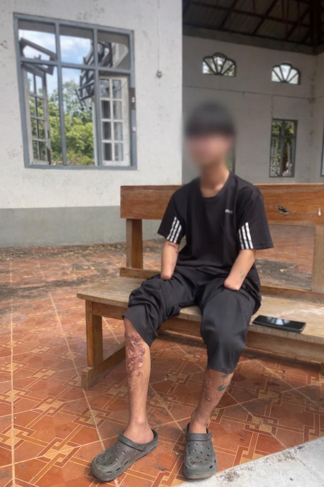

Archive
The archive gathers letters, testimonies, and media artifacts documenting life during conflict and displacement in Myanmar.
Audio
Joy and Pain Interview
Audio interview reflecting on suffering, endurance, and lived experience during conflict.
Kabar Ma Kyay Bu Song
Song artifact preserving emotion, memory, and collective expression through music.
Images

Demining Training
Training image documenting humanitarian mine action and field preparation.

Trauma Response Training
Image showing emergency care instruction and preparation in conflict conditions.

Humanitarian Training
Training artifact illustrating organized care, logistics, and readiness.

Mines Glovebox Photo
Photographic artifact connected to mine awareness and the material reality of danger.

Landmine Survivors
Photograph documenting landmine injury, survival, and the long aftermath of displacement.

Young Man Injured Removing a Landmine
Photograph recording severe injury and ongoing fear in a civilian environment shaped by explosive hazards.

Free Burma Rangers on the Road
Photograph of movement, fellowship, and resilience during frontline humanitarian travel.
Handwritten Letters

Letter From a Victim
Scanned handwritten testimony preserved as a fragile personal record.

Kids Handwritten Letter 1
Letter written by a child and preserved as a record of care, gratitude, and connection.

Kids Handwritten Letter 2
Letter written by a child expressing intimacy, hope, and continuity under displacement.